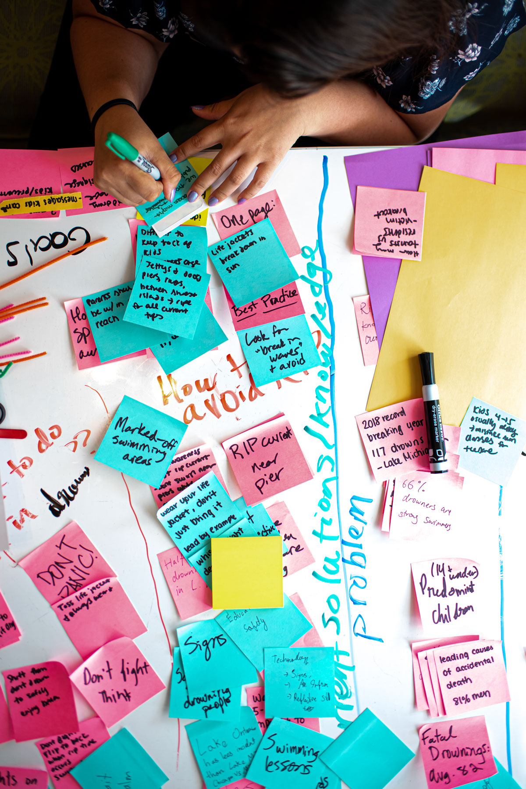

The University of Michigan's mental health resources page is a central hub for student well-being support, offering a range of services and programs designed to address and promote mental health. Whether seeking professional counseling, wellness education, or peer support, students can access a variety of options to help manage stress, improve mental well-being, and foster a healthy campus community.
Counseling and Psychological Services (CAPS)
About CAPS
Counseling and Psychological Services (CAPS) strives to offer a supportive environment grounded in multicultural, multidisclipinary, and multi-theoretical practices. We are dedicated to providing diverse students with accessible, quality mental health services.
Services Offered
We provide both in-person and virtual counseling options.
Telecounseling
Limited private spaces available for virtual counseling sessions. We recommend contacting the front desk for more details.
Other Important Notes
During busy times, CAPS may not accomodate class-related interviews or projects, but detailed information can be found on our website and in our annual reports. In addition, to safeguard client confidentiality, CAPS does not participate in scavenger hunts. However, students are more than welcome to visit the wellness zone, which has a separate entrance.
UHS and CAPS are not the same
University Health Service (UHS) at the University of Michigan provides medical services, focusing on the physical health and well-being of students. In contrast, Counseling and Psychological Services (CAPS) is dedicated to mental health support, offering counseling and psychological resources to help students manage stress and personal challenges.
For any further inquiries, feel free to contact us.
Hours:
Monday - Thursday: 8am-6pm
Friday: 8am - 5pm
Saturday & Sunday: Closed
Urgent/Crisis Support at CAPS:
Monday - Friday from 10am - 4:30pm
After Hours Urgent Support 24/7
Contact
Phone:734-764-8312 (24 hrs)
Email: caps-uofm@umich.edu
Address
Michigan Union
530 S. State Street
Suite 4079
Ann Arbor, MI, 48109
Wolverine Wellness
Wolverine Wellness promotes health and wellness through education, collaboration, and advocacy, focusing on social change, justice, and health equity to address oppression on a predominantly white campus. By partnering with students, faculty, staff, and stakeholders, we create conditions that prioritize well-being and belonging for all to thrive.
Wolverine Wellness utilizes the 5 core actions of health promotion — including the intersection of well-being and identity — as our guidepost and to foster innovative strategies that support our mission.
5 Core Actions of Health Promotion
- Prevention/Re-orient Services
We work with all people to aim to reduce harm and shift campus culture by engaging at all levels, from individuals to the whole community, while adapting our approach based on data and research. Our approach includes proactively addressing harm, respecting diverse needs and experiences, and supporting students in exploring all 8 dimensions of well-being with relevant resources.
- Personal Skill Development
We offer personalized, equitable resources to support students' well-being and collaborate with their support networks. Our approach includes evidence-based strategies, skill workshops, and population-wide campaigns to foster individual growth and resilience.
- Creating Supportive Environments
We foster inclusive, supportive environments that promote belonging and well-being while advocating for inclusivity where we live, work, and play. Our approaches include a therapy dog program, wellness courses, recovery support, and amplifying efforts that prioritize non-dominant student experiences.
- Strengthen Community Action
We empower campus partners with knowledge and skills to support collective well-being, valuing their wisdom, experiences, and agency. Our approach involves collaborating with those impacted, building relationships, and sharing resources to integrate well-being into their practices.
- Policy & System Level Change
Sustainable transformation requires policy and systems-level changes to achieve health equity and embed well-being in campus life. We lead these efforts as the backbone of the Well-being Collective, gathering stakeholder input to shape policy recommendations.
Wolverine Wellness Inquiry Form
Interested? Use our inquiry form to connect with us about custom presentations and workshops, training sessions, and individual support services for students!
Contact
Phone: 734-763-1320
Email: WolverineWellness@umich.edu
Address
207 Fletcher St.
Suite 0245
Ann Arbor, MI 48109
CAPS Peer Counseling
The Individual Peer Counseling (IPC) program at the University of Michigan offers a fresh approach to support student mental health by providing a platform for students to express themselves. Peer counselors, trained by CAPS professional staff in active listening, offer a space where students can connect with peers of similar age, interests, and backgrounds to discuss various issues. While peer counseling offers support, it does not replace confidential therapy from a licensed CAPS mental health professional.
Scheduling a Session
Unfortunately, students cannot receive peer counseling through walk-in appointments at CAPS. However, students can schedule a meeting with a peer counselor by submitting a specific form or through a referral from a CAPS counselor. This ensures that peer counseling sessions are properly scheduled and matched with the student's needs.
Who Peer Counselors Are
Peer counselors, who are UM undergraduate and graduate students, understand the challenges of university life. They are trained to assist students with issues such as loneliness, transition to university life, adjustment to the state or country, accessing campus resources, and managing academic and personal stress. Their main focus is to listen, support, and provide guidance when needed.
Benefits of Peer Counseling
Peer counseling provides a relaxed, judgment-free space for students to express their thoughts and find support. Many students appreciate having someone outside their immediate circle to talk to and help them work through personal challenges.
Hours:
Monday - Thursday: 8am-6pm
Friday: 8am - 5pm
Saturday & Sunday: Closed
Urgent/Crisis Support at CAPS:
Monday - Friday from 10am - 4:30pm
After Hours Urgent Support 24/7
Contact
Phone:734-764-8312 (24 hrs)
Email: caps-uofm@umich.edu
Address
Michigan Union
530 S. State Street
Suite 4079
Ann Arbor, MI, 48109